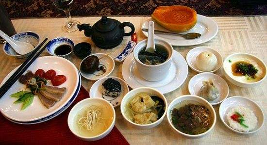
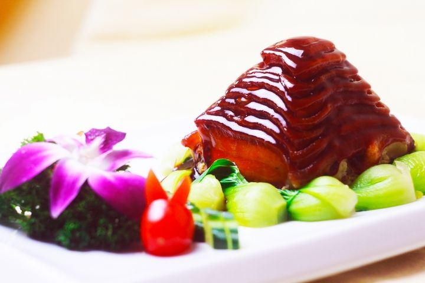

中华饮食文化
作者：cindy 日期：2017-5-16
注重情趣
中国烹饪很早就注重品味情趣，不仅对饭菜点心的色、香、味有严格的要求，而且对它们的命名、品味的方式、进餐时的节奏、娱乐的穿插等都有一定的要求。中国菜肴的名称可以说出神入化、雅俗共赏。菜肴名称既有根据主、辅、调料及烹调方法的写实命名，也有根据历史掌故、神话传说、名人食趣、菜肴形象来命名的，如“全家福”、“将军过桥”、“狮子头”、“叫化鸡”、“龙凤呈祥”、“鸿门宴”、“东坡肉”。
食医结合
中国的烹饪技术，与医疗保健有密切的联系，在几千年前有‘医食同源'和‘药膳同功'的说法，利用食物原料的药用价值，做成各种美味佳肴，达到对某些疾病防治的目的。”
中和之美是中国传统文化的最高的审美理想。“中也者，天下之大本也；和也者，天下之达者也。至中和，天地位焉，万物育焉”（《礼记·中庸》）。《古文尚书·说命》中就有“若作和羹，惟尔盐梅”的名句，意思是要做好羹汤，关键是调和好咸（盐）酸（梅）二味，以此比喻治国。《左传》中晏婴（齐国贤相）也与齐景公谈论过什么是“和”，指出“和”不是“同”，和是要建立不同意见的协调的基础上的。因此中国哲人认为天地万物都在“中和”的状态下找到自己的位置以繁衍发育。这种审美理想建筑在个体与社会、人与自然的和谐统一之上。这种通过调谐而实现“中和之美”的想法是在上古烹调实践与理论的启发和影响下产生的，而反过来又影响了人们的整个的饮食生活，对于追求艺术生活化、生活艺术化的古代文人士大夫，尤其如此。
与“中和”相反的是极端，极端在烹饪上也不被视为正宗，那些“咸过头，辣过头，酸过头”的食品虽然会受到一些身体处在不正常状态下的人们的追捧，但从长远看来它对身体是有害的。社会生活、政治生活中的极端主义其弊更是不可胜言。
情调优雅
中国饮食文化情调优雅，氛围艺术化，主要表现在美器、夸名、佳境三个方面。
袁枚在《随园食单》中引用过一句“古人云”的古语，云“美食不如美器”，是说食美器也美，美食要配美器，求美上加美的效果。
中国饮食器具之美，美在质，美在形，美在装饰、美在与馔品的谐合。中国古代食具之美，主要包括陶器、瓷器、铜器、金银器、玉器、漆器、玻璃器几个大的类别。彩陶的粗犷之美，瓷器的清雅之美，铜器的庄重之美，漆器的透逸之美，金银器的辉煌之美，玻璃器的亮丽之美，都曾给使用它的人以美好的享受，而且是美食之外的又一种美的享受。
美器之美还不仅限于器物本身的质、形、饰，而且表现在它的组合之美，它与菜肴的匹配之美。
周代的列鼎，汉代的套杯，孔府的满汉全席银餐具，都体现一种组合美。孔府专为举行高级筵宴的满汉全席银餐具，一套总数为404件，可上菜196道。这套餐具部分为仿古器皿，部分为仿食料形状的器皿。器皿的装饰也极考究，嵌镶有玉石、翡翠、玛瑙、珊瑚等，刻有各种花卉图案，有的还镌有诗词和吉言文字，更显高雅不凡。
孔府的满汉全席餐具，按照四四制格局设置，分小餐具、水餐具、火餐具、点心盒几个部分。美器与美食的谐合，是饮食美学的最高境界。杜甫《丽人行》中“紫驼之峰出翠釜，水晶之盘行素鳞；犀筯厌饫久未下，鸾刀缕切空纷纶”的诗句，同时吟咏了美食美器，烘托出食美器美的高雅境界。
在中国人的餐桌上，没有无名的菜肴。一个美妙的菜肴命名，既是菜品生动的广告词，也是菜肴自身一个有机组成部分。菜名给人也有美的享受，它通过听觉或视觉的感知传达给大脑，会产生一连串的心理效应，发挥出菜肴的色、形、味所发挥不出的作用。